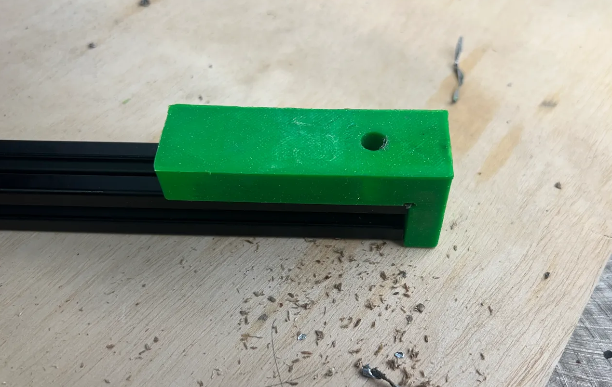
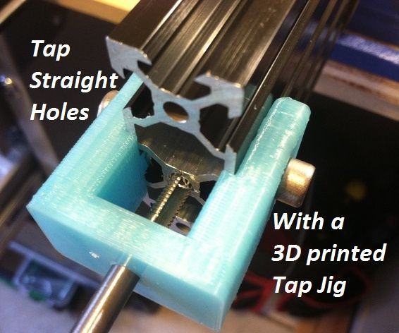
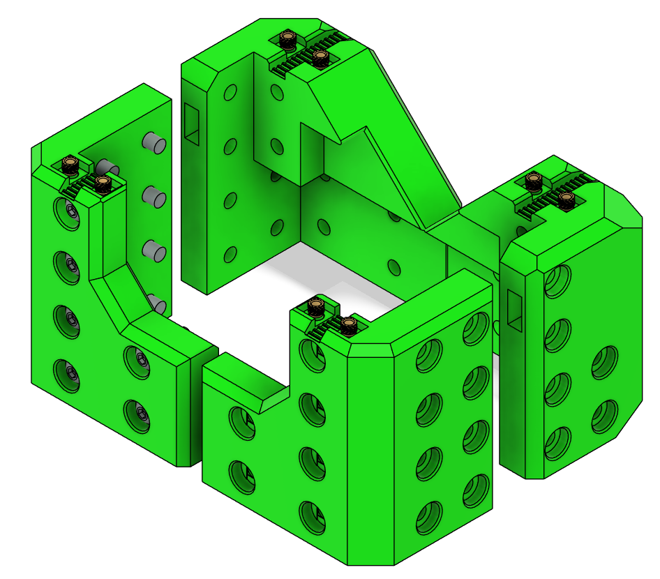
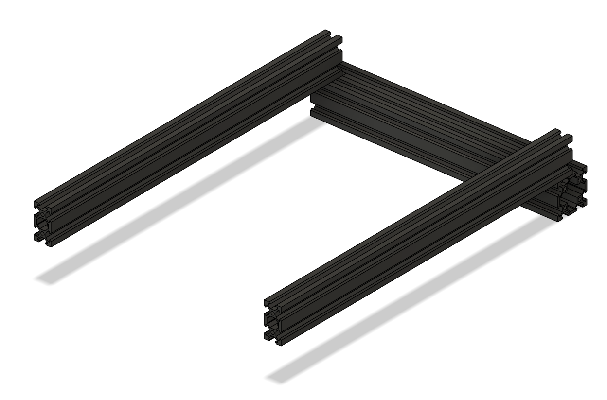
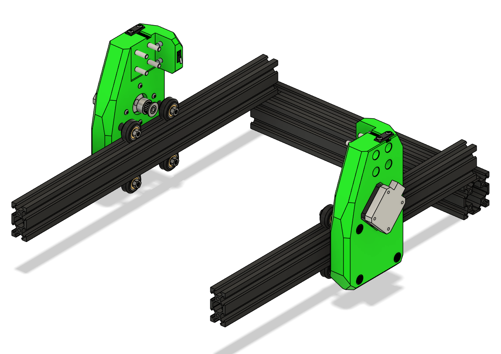
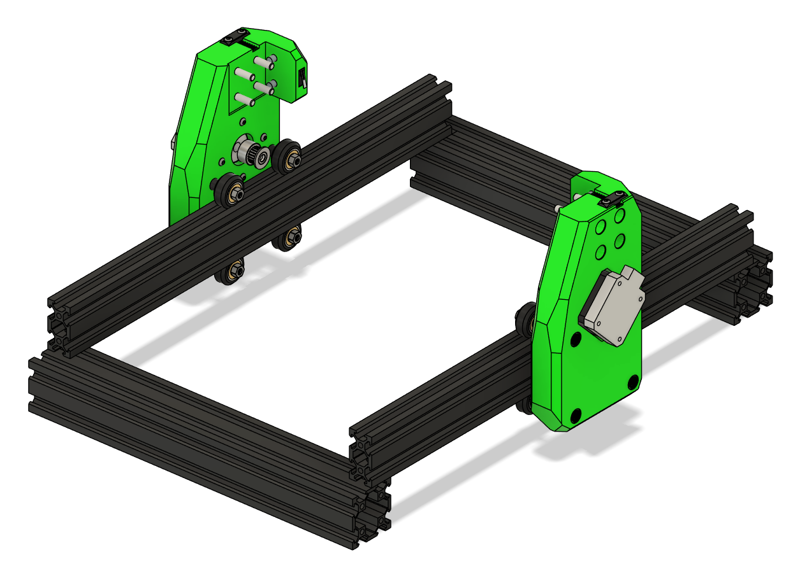
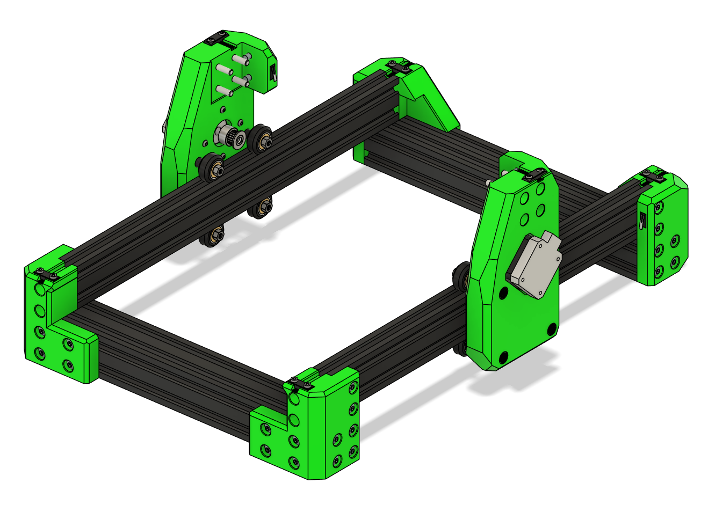
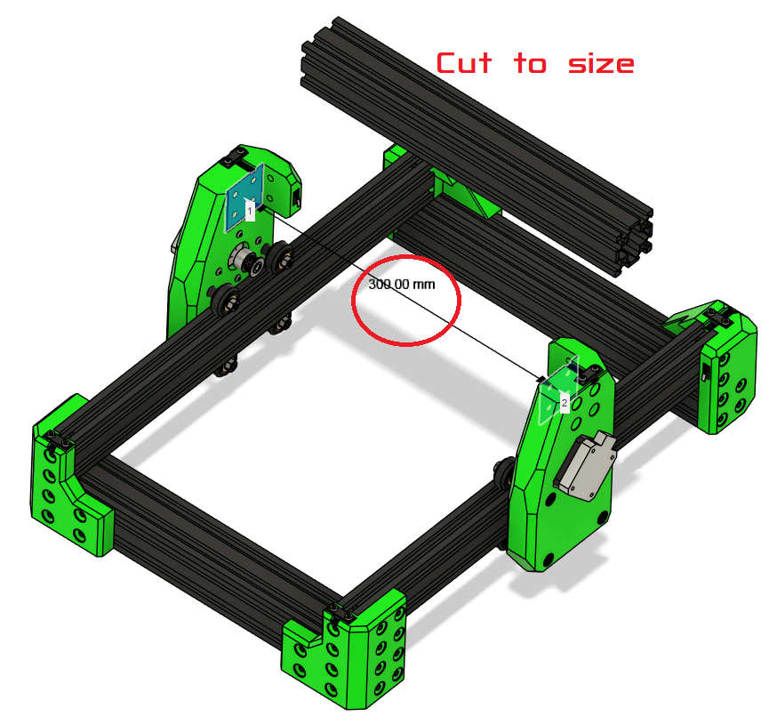

Frame Assembly¶
This chapter walks through building the Ender 3 CNC frame.
Parts Required¶
| Qty | Item | Source | Notes |
|---|---|---|---|
| 48pc | M5x16 BHSC | Buy | Frame bolts |
| 4pc | M5x40 | Ender3 | Z-axis attachment |
| 4pc | M5x8 | Ender3 | Extra spacers |
| 4pc | M5 1mm Shims | Buy | For precise leveling |
| 52pc | M5 T-nuts | Buy | Frame assembly |
| 2pc | 4020x400mm | Ender3 | Extrusion |
| 2pc | 4040x290mm | Ender3 | Extrusion |
Ready Extrusion¶
Cut Extrusion (if needed)¶
- Measure your frame; Ender 3 frames may vary ± a few mm.
- Cut extrusion to size (use a machinest square to make sure they are square.)
- Tap 4 new M5 threads on the cut side.
Tip
If you are unsure, measure six times before cutting. Once cut, you cannot undo it.
Drill Through holes for Blind joints¶
These allow you to put a hex key through the hole to tighten the bolt below.

should be 20mm on center offset both front and back.¶

Tap Ends¶
of all the Extrusions

¶Add Heat Inserts¶

XY Joints¶
- Lay out the aluminum extrusions with 4040s on the ends and 4020s perpendicular.
- Take note of blind joints and the 20mm offset on the extrusion.
- Loosely attach M5 bolts and T-nuts to hold the frame together on one side.

Tip
Leave loose until all corners are in place.
-
Mount XY Joints to Frame¶
- Slide the XY joints onto the 2020 frame extrusions
- Place the bottom V-wheels into the V-slot.
- Loosely add M5 locknuts to the bottom wheels.
- Tilt the XY joint slightly to insert the top wheels into the V-slot.
- Wiggle the assembly so the top screws pop into place.
Warning
The XY joints are pressfit in some positions; force gently and double-check alignment.

- Add the front 4040 and loosely attach M5 bolts and T-nuts.

- Attach corners

- Check that the frame is square:
- Measure diagonals; they should be equal.
- Adjust joints as necessary.
- Fully tighten all the bolts
Tip
Use a flat surface when squaring the frame for best results.
Check Alignment¶
- Measure the distance between the X extrusion mounting points — Ender 3 frames may vary by ± a few millimeters.
- Adjust the XY joints as necessary to ensure smooth motion.
- After positioning correctly, tighten all screws carefully.
Verify Motion¶
- Slide the XY gantry along the X and Y axes by hand.
- Ensure wheels roll smoothly without binding.
- Check pulley alignment with belts — adjust if necessary before attaching the endstop.
Troubleshooting¶
- Wheels bind or grind: Check spacers, alignment, and V-slot cleanliness.
- XY gantry wobbles: Ensure M5 locknuts are tight and spacers are correct length.
- Pulleys misaligned: Re-position 20T pulleys before tensioning belts.
Measure and Cut the Gantry if Needed¶
- Cut the X-axis extrusion to length (check your frame’s actual measurement).
- Tap new M5 threads on the cut ends.
- Proceed with X+Z carriage assembly as described in the next section of the manual.

Warning
DO NOT ATTACH THE GANTRY YET. It is done AFTER the carriage is attached.
Final Checks¶
- Ensure frame is square and rigid.
- Tighten bolts in blind joints.
Warning
Do not press in the endstops until wiring is complete. They are press-fit and may be difficult to remove afterward.
Ready to Proceed?¶
Once you have completed the frame assembly, you are ready to finish the Gantry Assembly.